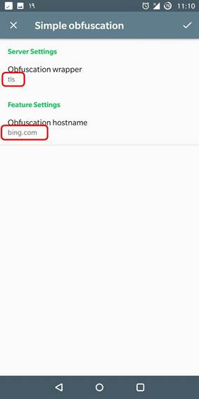
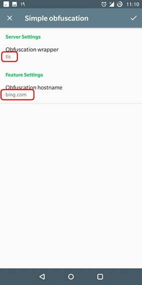

از کجا شروع شد؟
بعد از فیلترینگ گسترده تو ایران که سرویس تلگرام جزوش بود… و حتی سرویسهای mtproto و shadowsocks شناسایی شدند، تصمیم گرفتم که پیادهسازی جدیدی از shadowsocks رو امتحان کنم که قابلیت ردیابیش سختتر باشه. تو سناریوهای قبل، یه کلاینت shadowsocks به یک سرور shadowsocks در خارج وصل میشد… تو پیادهسازی جدید، یک سرویس simple-obfs در سمت سرور و یک سرویس simple-obfs در سمت کلاینت (درواقع به عنوان لایههای اضافه بین کلاینت و سرور shadowsocks قبلی) اضافه میشه… و وظیقهشون اینه که انتقال دادهها رو شبیه پرتوکل http یا https کنه. در ادامه خواهید دید که چطور میشه سرور shadowsocks رو کنار یک وبسایت با آدرس https مخفی کرد.
بخش یک: راهاندازی سرور
قدم اول: اضافه کردن شاخهی backports به sources.list:
deb http://deb.debian.org/debian stretch-backports main contrib non-free
deb-src http://deb.debian.org/debian stretch-backports main contrib non-free
قدم دوم: نصب برنامههای اصلی:
apt-get -t stretch-backports install nginx shadowsocks-libev pwgen
قدم سوم: دریافت سورسکد simple-obfs و کامپایل آن:
من به شخصه برای کامپایل برنامهها یه کانتینر داکر مثل سیستمعامل مبدأ ایجاد میکنم تا با نصب بستههای اضافی که فقط یک بار مورد استفاده قرار میگیرند، سیستم عامل اصلی رو کثیف نکنم… پیشنهاد میکنم شما هم برای کامپایل یا بیلد همین کار رو بکنید… نهایتاً هدف اینه که فایل deb بسازیم:
apt-get --no-install-recommends install debhelper git asciidoc libcork-dev libev-dev xmlto asciidoc libcork-dev libev-dev xmlto openssl ca-certificates build-essential
git clone https://github.com/shadowsocks/simple-obfs
cd simple-obfs
git submodule update --init --recursive
dpkg-buildpackage -b
حاصل باید یک فایل شبیه simple-obfs_0.0.5-1_amd64.deb تو شاخهای باشه که دستور git clone رو توش اجرا کردید.
قدم سوم: نصب simple-obfs:
کاری نداره:
dpkg -i simple-obfs_0.0.5-1_amd64.deb
قدم چهارم: پیکربندی shadowsocks-libev:
بعد از قدم سوم، یک فایل تو مسیر /etc/shadowsocks-libev/config-obfs.json ایجاد میشه. این فایل پیکربندی هست که باید جایگزین تنظیمات قبلی shadowsocks-libev کنیم:
mv /etc/shadowsocks-libev/config-obfs.json /etc/shadowsocks-libev/config.json
و حالا فایل /etc/shadowsocks-libev/config.json رو ویرایش میکنیم:
{
"server":"your-server-public-IP-here",
"server_port":443,
"local_port":1080,
"password":"your-passphrase-here",
"timeout":60,
"method":"chacha20-ietf-poly1305",
"mode":"tcp_and_udp",
"fast_open":true,
"plugin":"obfs-server",
"plugin_opts":"obfs=tls;obsf-host=bing.com;failover=127.0.0.1:8443;fast-open"
}
در اینجا دقت کنید که چهار فیلد رو تغییر دادیم.
در اینجا دقت کنید که چهار فیلد رو تغییر دادیم. در ادامه با این چهار فیلد زیاد سروکار داریم:
· فیلد server: مقدارش باید IP عمومی سرور یا vps شما باشه… میتونید از 0.0.0.0 هم استفاده کنید که توصیه نمیشه.
· فیلد server-port: که باید مقدارش رو 443 بذارین. علتش رو در ادامه خواهم گفت.
· فیلد password: یه عبارت دلخواه که باهاش ارتباطات شما encrypt میشه.
· فیلد plugin-opts: مقدار obfs-host داخل این استرینگ اضافه شده. توصیه میشه که از hostname همون سرور یا یه سایت بزرگ مثل bing.com استفاده کنید.
توضیحات:
سناریوی تحریمشکن به این صورت هست: اگر کسی به پورت 443 که همانا پورت https هست وصل شد:
· اگر رفتار یک کلاینت shadowsocks رو داشت، باهاش مثل کلاینت shadowsocks رفتار کن،
· در غیر این صورت وانمود کن که یه وب سرور داره روی این پورت لیسن میکنه!
پس ما نیاز داریم به یه وبسرور مثل nginx که اگر فیلترچی خواست ببینه روی پورت 443 ما چه خبره، با یه صفحه وب روبرو بشه. خب، به nginx میگیم که رو یه پورت دیگه مثل 8443 لیسن کن… و به تحریمشکن میگیم هرکس رفتار غیر عادی داشت، بفرستتش به پورت 8443
قدم پنجم، پیکربندی nginx:
اول از همه نیاز داریم به یه جفت-کلید rsa که همانا سرتیفیکیت صفحه وبسایتمون هست. اگر سرتیفیکیت آماده دارید که چه بهتر، اگر هم نه، با دستور زیر این دو کلید رو بسازید:
openssl req -x509 -nodes -days 3650 -newkey rsa:2048 -keyout /etc/ssl/private/ssl-cert-snakeoil.key -out /etc/ssl/certs/ssl-cert-snakeoil.pem
و دوم اینکه نیاز دارید تا فایل کانفیگ nginx رو در مسیر /etc/nginx/sites-enabled/default کمی تغییر بدید:
تو بخش SSL Configuration ، بخش listen رو به این شکل تغییر بدید:
listen 127.0.0.1:8443 ssl default_server;
و خط زیر رو از حالت کامنت در بیارید:
include snippets/snakeoil.conf;
قدم ششم: اتمام راهاندازی سرور:
systemctl restart nginx.service shadowsocks-libev.service
بخش دو: تنظیمات کلاینت
امیدوارم که سرور رو با موفقیت راه انداخته باشید. وقتشه که بتونیم گوشیها و pcهامون رو به سرور وصل کنیم. گزینههایی که دم دست هستند، shadowsocks نسخه ویندوز و اندروید و خط فرمان ss-local هستند که از نظر تنظیمات مشترک هستند و فقط نحوه وارد کردنشون متفاوت هست. اینجا نحوه پیکربندی این سه مورد رو براتون توضیح دادم.
تنظیم اندروید:
اول از همه باید برنامههای shadowsocks و simple-obfs رو نصب کنید.

بعد از اون، طبق عکسهای زیر، تنظیمات مربوطه رو وارد کنید:

 

تنظیم ss-local:
طبق قدم اول تا سوم پیش برید، با این تفاوت که نیازی به نصب nginx ندارید. بعد از نصب موفقیتآمیز shadowsocks-libev و simple-obfs در سمت کلاینت، دستور زیر رو وارد کنید:
ss-local -v -s your-server-public-IP-here -p 443 -b 0.0.0.0 -l 1080 --plugin obfs-local -k your-passphrase-here -m chacha20-ietf-poly1305 --plugin-opts "obfs=tls;obsf-host=bing.com" -u
برای اطلاعات بیشتر از انواع روشهای بکارگیری simple-obfs در کنار ss-local میتونید از این صفحه و همینطور برای دیدن مشاهده انواع گزینههای در دسترس برای shadowsocks-libev میتونید از این صفحه بازدید کنید.
تنظیم shadowsocks در ویندوز:
آخزین نسخه فایل zip برنامههای shadowsocks و simple-obfs رو از اینجا و اینجا دانلود کنید و فایل اجراییشون رو کنار هم قرار بدید:
و بعد اطلاعات رو طبق عکس زیر وارد کنید:
پینوشت:
· در زمان نگارش این راهنما متوجه شدم که راهنماهای دیگری هم مثل این تو اینترنت موجود هست. کافیه به صفحات ۲ و ۳ سرچ گوگل رجوع کنید
· یه بزرگمرد/بزرگزن بیاد از اینا docker file و docker compose و همینطور daemon file برای systemd و sysvinit بسازه، من حوصله ندارم
· من نتونستم یه ویرایشگر WYSIWYG برای HTML پیدا کنم که BiDi و rtl رو هم ساپورت کنه. به ناچار از Microsoft Word استفاده کردم. اگه میشناسید معرفی کنید.